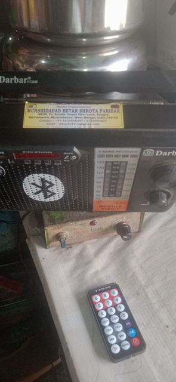

আমাদের কাজ
রেডিও শোনা থেকে শুরু, কিন্তু সেখানেই থেমে থাকি না।
“বেতার ভুবন” পত্রিকা
প্রতি বছর ছাপা বার্ষিক পত্রিকা। ষষ্ঠ সংখ্যা (২০২৭) বেরোবে ১৭ জানুয়ারি। বেতার কেন্দ্রের তথ্য আর সদস্যদের লেখা, দুই-ই থাকে। লেখা পাঠানোর নিয়ম।
রেকর্ডিং গ্রুপ
সদস্যদের গ্রুপে রোজ আকাশবাণী ও নানা কেন্দ্রের অনুষ্ঠান-সূচি আর রেকর্ডিং দেওয়া হয়। যিনি যে অনুষ্ঠান শুনতে পাননি, পরে রেকর্ডিং থেকে শুনতে পারেন।
রেডিও স্টল ও প্রদর্শনী
জেলা বইমেলায় রেডিও স্টল, বার্ষিক মিলনমেলায় পুরনো ও নতুন রেডিওর প্রদর্শনী। AWR-এর কলকাতা সম্মেলনেও আমরা স্টল দিয়েছি।
বিশ্ব বেতার দিবস ও রক্তদান
প্রতি বছর বিশ্ব বেতার দিবসে রক্তদান শিবির করি। এ বছর এই দিনে ২৫টি রেডিও উপহারও দেওয়া হয়েছে।
বৃক্ষরোপণ
“গাছ লাগান, পরিবেশ বাঁচান”: জুলাইয়ে বহরমপুর, হরিহরপাড়া, কান্দি ও সাগরদিঘীতে চারা লাগানো হয়েছে।
রেডিও সচেতনতা ও ভ্রমণ
মেলা, স্কুল ও কলেজে রেডিও সচেতনতার অনুষ্ঠান। গত বছর সুন্দরবনে রেডিও ট্যুর হয়েছে; আসছে শীতেও এমন ভ্রমণের ইচ্ছা আছে।
বৃক্ষরোপণ, জুলাই ২০২৬
বিশ্ব বেতার দিবসের উপহার
বিশ্ব বেতার দিবসে সংগঠনের দেওয়া ২৫টি রেডিওর একটি সম্প্রতি মেরামতের জন্য ফিরে এসেছে।
